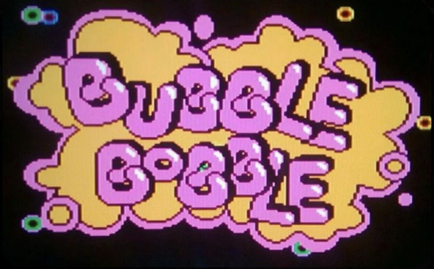
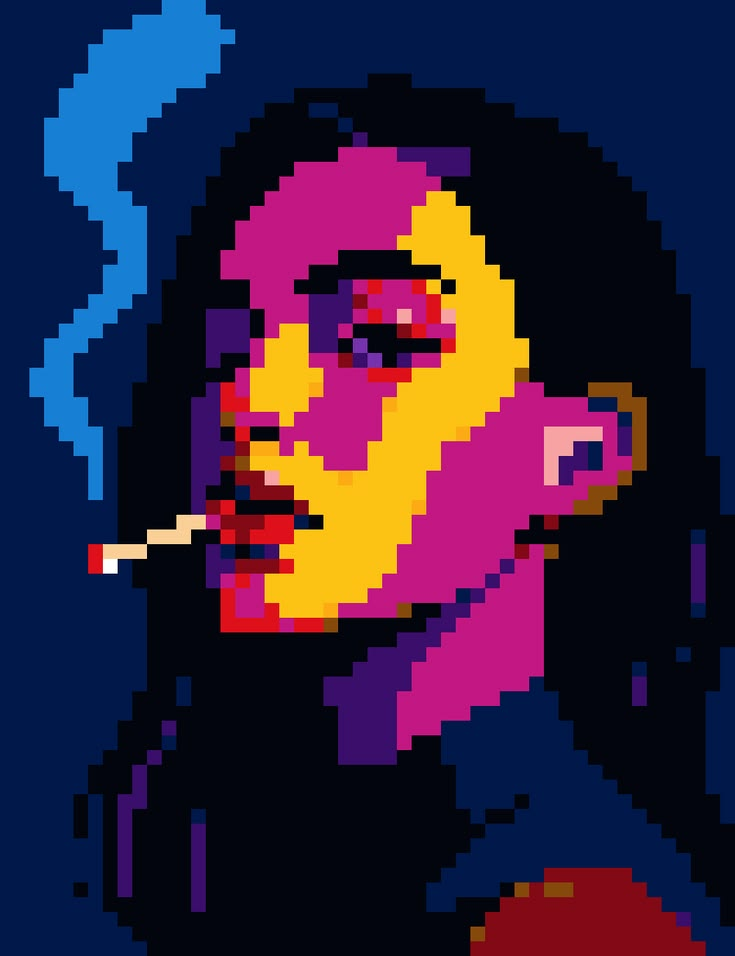
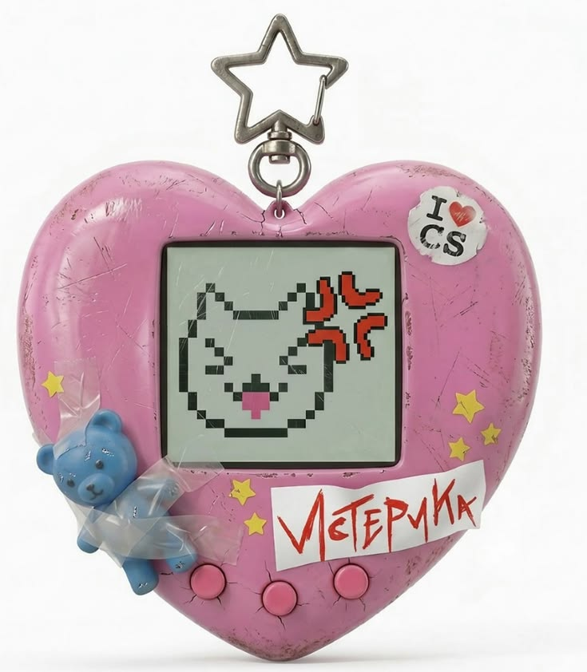
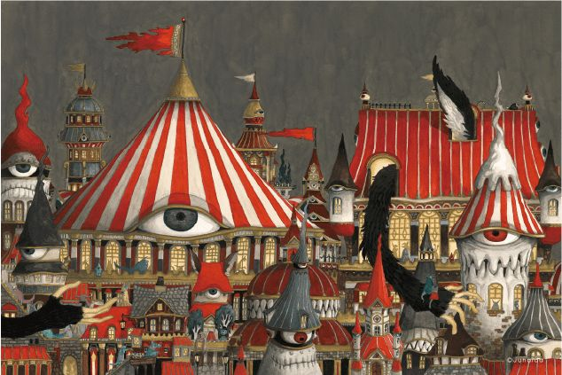

Exploración de Referencias Estéticas
Nuestra propuesta se articula bajo la noción de un dispositivo de juguete virtual (Tamagotchi / Consola Portátil Retro) que opera como la interfaz de entrada a la experiencia. La inocencia estética del juguete entra en un choque violento con la narrativa de terror, abandono y canibalismo propia del relato original de Hansel y Gretel.





Selección de los Medios
- Imagen/Gráfica: Ilustraciones que emulen el arte surrealista del moodboard para los escenarios del "bosque digital", combinadas con elementos vectoriales planos de interfaces.
- Audio: Paisajes sonoros híbridos (sintetizadores + ambientes de suspenso) y notas de voz con filtros de distorsión.
- Texto/Código: Tipografías pixeladas o de estilo videojuego retro que guiarán la navegación interactiva.
Diseño de la Interfaz y Experiencia de Navegación
La interfaz simulará un dispositivo de juguete virtual o una aplicación móvil retro-futurista (un híbrido entre un Tamagotchi gigante y un perfil de red social psicodélico).
Los botones de decisión tendrán texturas brillantes y de plástico. Navegar por el relato se sentirá como jugar un videojuego inocente que se va corrompiendo a medida que el usuario se adentra en las decisiones difíciles.
Estrategia de Inmersión, Actuación y Participación
- Inmersión por Extrañamiento: La estética colorida pero perturbadora mantendrá al usuario en un estado de alerta constante. Utilización de colores vibrantes complementarios.
- Actuación/Participación: El usuario interactúa con objetos "lindos" (hacer clic en un espejo, tocar una pantalla de juguete) para tomar decisiones de vida o muerte para los hermanos.
- Navegación: La participación se vuelve interactiva a través del engaño visual: el usuario debe aprender a desconfiar de las interfaces perfectas.